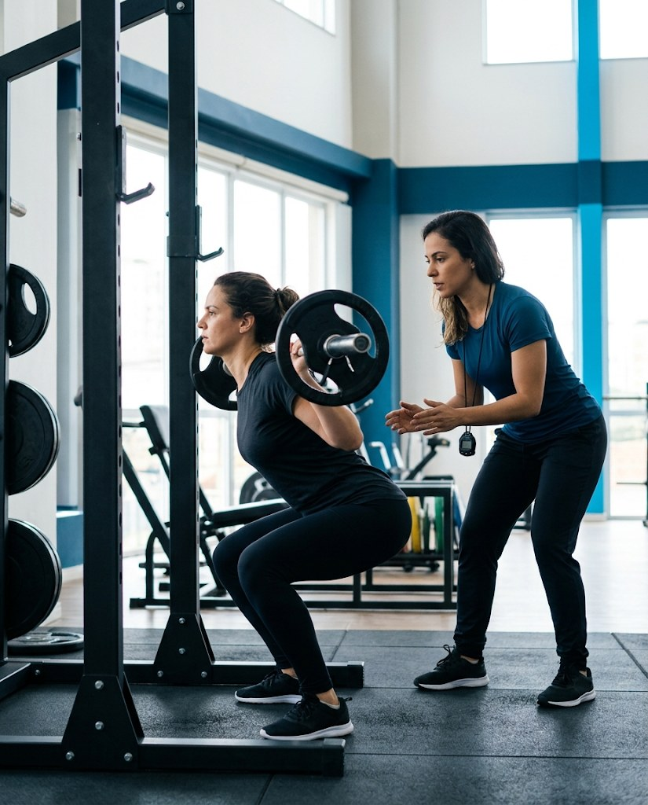

Recuperar movimentos
Para quem busca retomar movimentos e atividades após uma lesão ou período de limitação.
Fisioterapia · Mobilidade e reabilitação
Cuidado individualizado para recuperar movimentos, desenvolver mobilidade e voltar às atividades do dia a dia com mais segurança.

Cuidado individualizado
Para quem busca retomar movimentos e atividades após uma lesão ou período de limitação.
Para quem quer trabalhar mobilidade, função e confiança nos movimentos do cotidiano.
Um acompanhamento pensado para apoiar o retorno gradual às atividades e aos exercícios.
Nosso cuidado
A fisioterapia integra o cuidado oferecido pela equipe PKZ One to One. O atendimento considera as necessidades e os objetivos de cada pessoa, com atenção à mobilidade, à reabilitação e à retomada das atividades.
Nosso foco
Acompanhar cada etapa com escuta, orientação e exercícios adequados ao momento e à evolução de cada pessoa.
Como funciona
O acompanhamento respeita suas necessidades e avança conforme sua resposta ao processo.
Entendimento da sua rotina, histórico, necessidades e objetivos.
Definição das prioridades e das atividades adequadas ao seu momento.
Orientação durante os exercícios e atenção à qualidade do movimento.
Revisão do plano conforme seus avanços e as necessidades identificadas.
Entre em contato com a equipe para conhecer o atendimento e tirar suas dúvidas.